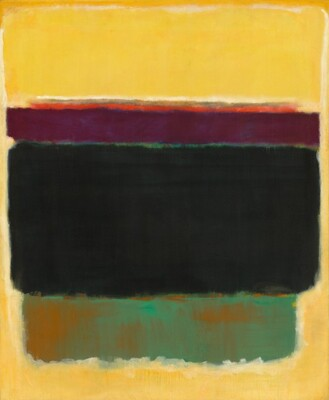
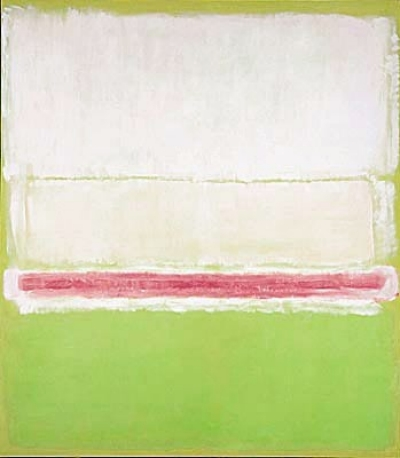
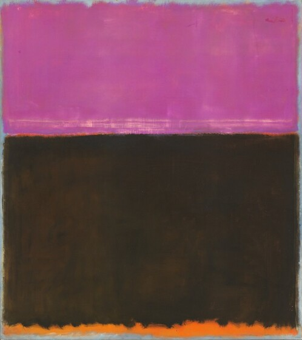
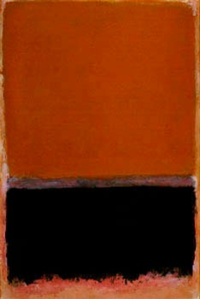
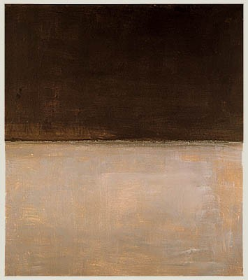
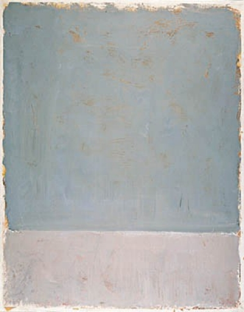

Mark Rothko, Untitled, 1949, pigmented hide glue and oil on canvas

Mark Rothko, No. 2 (No. 7 and No. 20), 1951 (alternatively dated to 1950)

Mark Rothko, Untitled, 1953, pigmented hide glue and oil on canvas

Mark Rothko, Untitled, 1953, Private Collection

Mark Rothko, Untitled, 1969, John and Mary Pappajohn, Des Moines, Iowa

Mark Rothko, Untitled, 1969, Collection of Kate Rothko Prizel